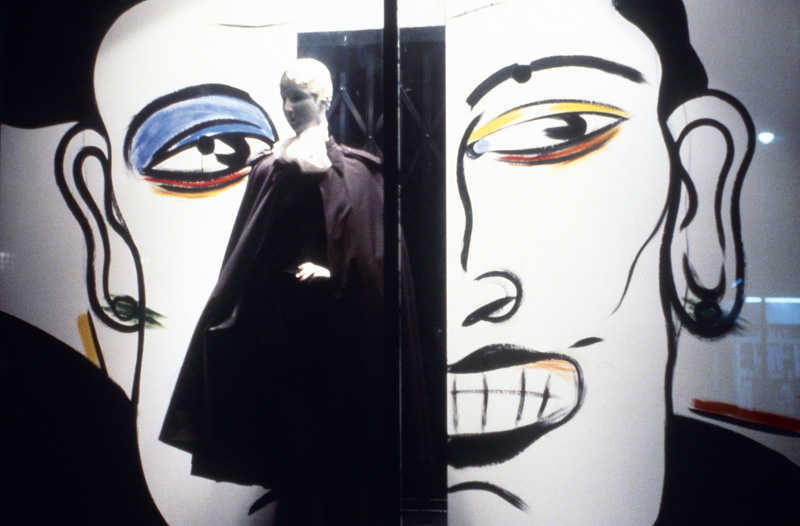
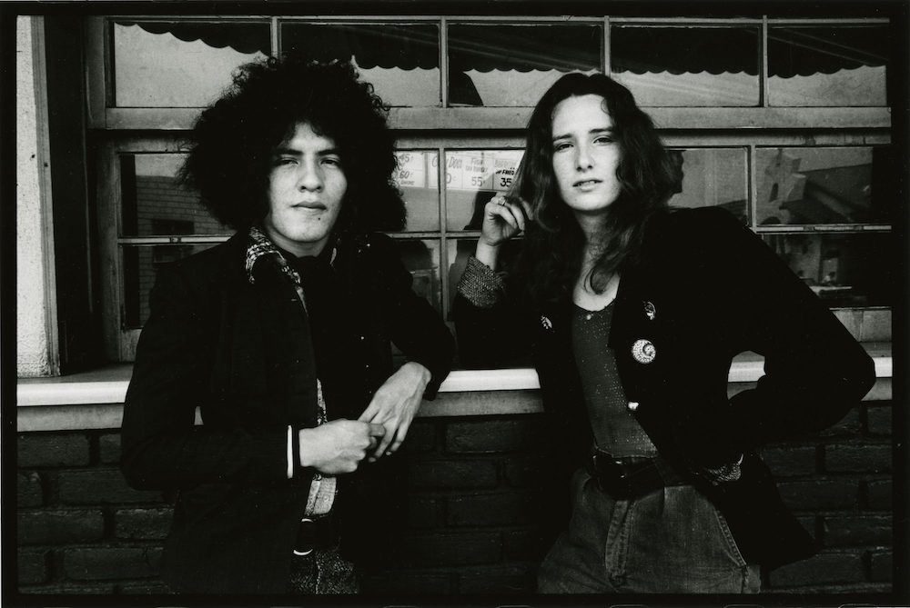

Anthony Friedkin, Jim and Mundo, Montebello, East Los Angeles, 1972. From The Gay Essay, 1969–73. Gelatin silver print, 11 x 14 in. (27.9 x 35.6 cm). Gift of Anthony Friedkin. ONE National Gay & Lesbian Archives at the USC Libraries. Courtesy of Anthony Friedkin.
Mundo Meza, Documentation of a window display at Maxfield Bleu, West Hollywood,
c. early 1980s. Photo by Mundo Meza. Courtesy of Pat Meza.
Mundo Meza, (born 1955, Mexico; died 1985, Los Angeles), Portrait Study, 1983. Acrylic on paper. Gift of Simon Doonan. Photo by Ian Byers-Gamber.